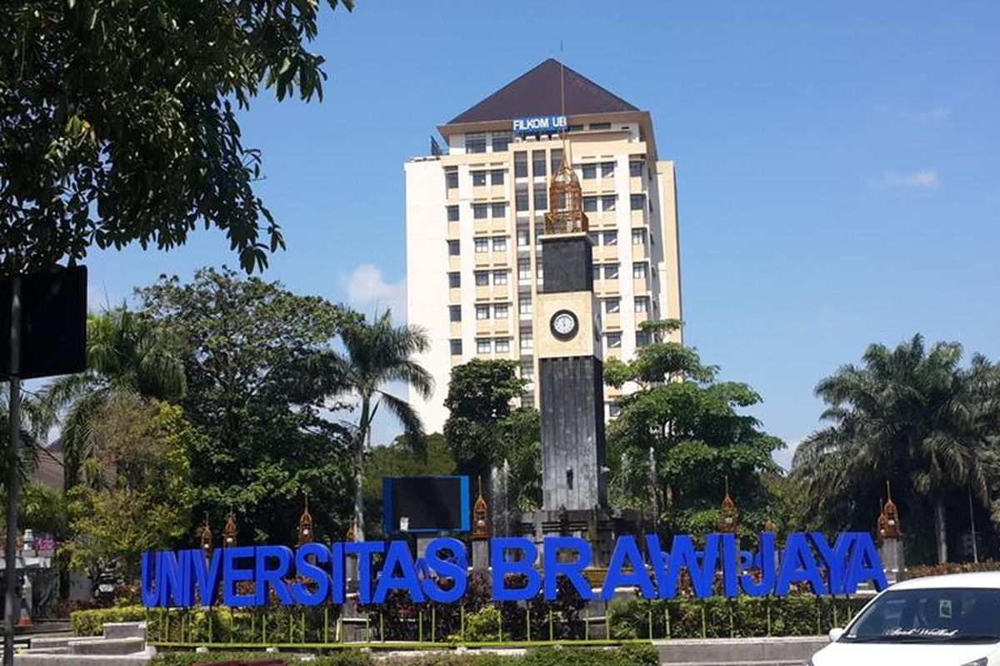

Universitas Brawijaya (UB) adalah salah satu perguruan tinggi negeri terkemuka di Indonesia yang berpusat di Kota Malang, Jawa Timur. Didirikan pada 5 Januari 1963 dan dinamai oleh Presiden Soekarno, UB kini menduduki peringkat #616 di QS World University Rankings 2027.